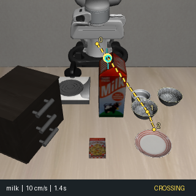

Obstacle benchmark
Explore 16 manipulation tasks across four LIBERO suites. Compare the original static obstacles with moving obstacles in Level III.

Spatial / Level III
Moving obstacle
The arm holds its start pose while the obstacle crosses the estimated task route. The yellow ring marks the 3D crossing.
Obstacle speed